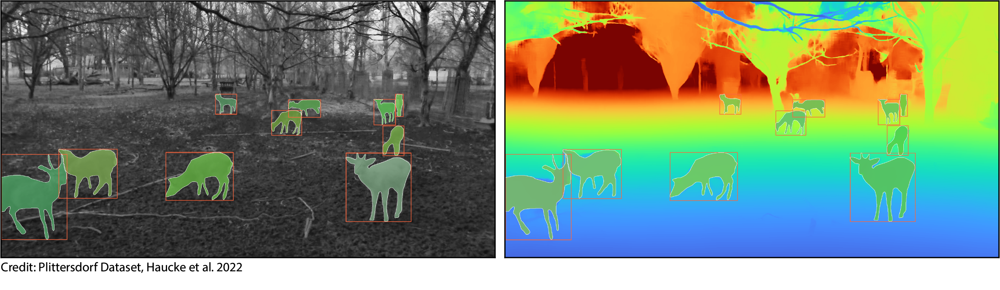
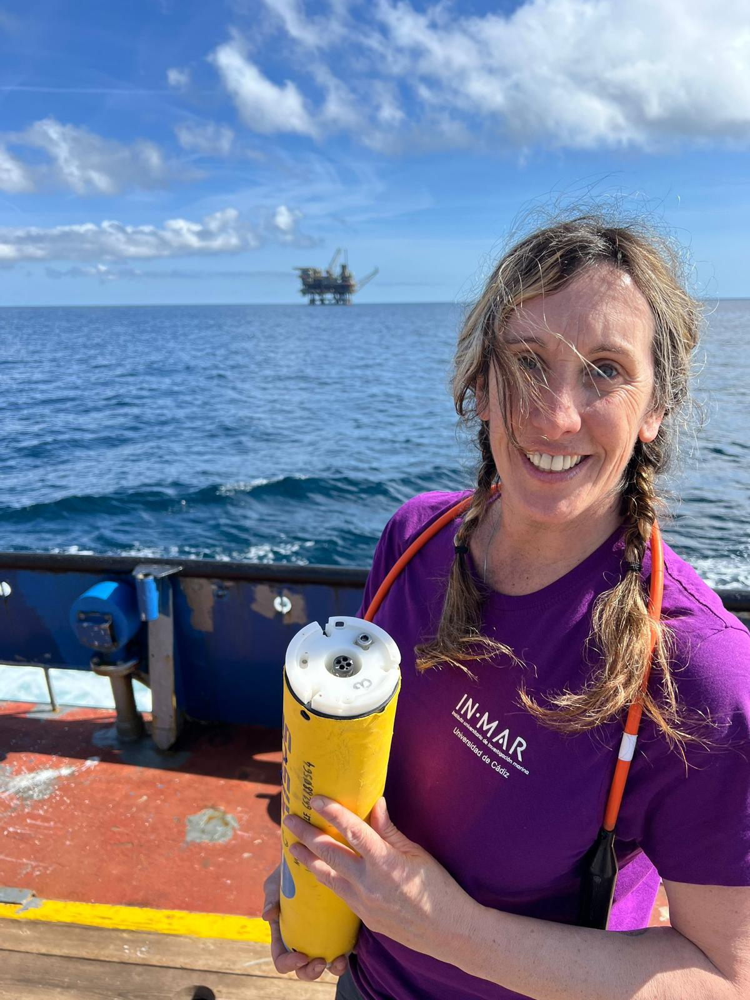
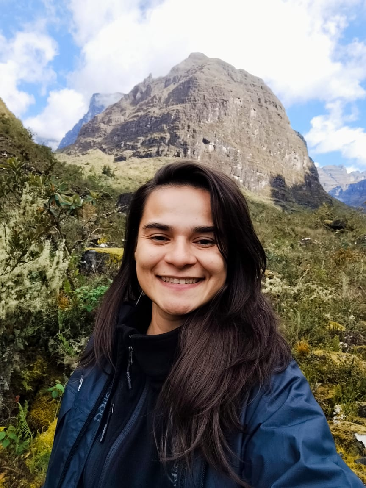
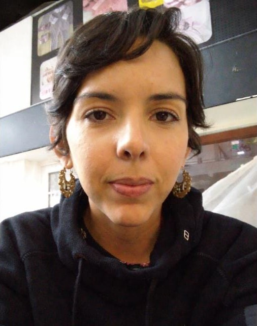
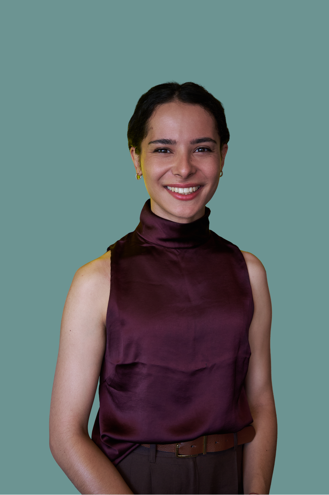

Students 2027

Students by year: 2022 | 2023 | 2025 | 2026 | 2027
Meet the CV4Ecology 2027 participants. Profile information is shown for participants who have submitted it; additional profiles will be added when available.
Participant profiles

Jarrett Byrnes
University of Massachusetts Boston
Jarrett Byrnes is a marine community ecologist focused on the causes and consequences of biodiversity for coastal ecosystems. He works as an associate professor in the Department of Biology at the University of Massachusetts Boston. His research spans scales from small-scale experimentation to large-scale analysis of remote sensing data. He conducts much of his work in the coastal ecosystems of the Gulf of Maine, studying urban coastal ecosystems with the Stone Living Lab as well as kelp forests from Long Island to Canada and around the globe. He has been diving and working in New England marine ecosystems since college, drawn back by their natural beauty and the fascinating stories the ocean tells us if we look and listen.
Project: Jarrett plans to develop computer vision models for the Stone Living Lab Living Seawalls project. The project includes seawalls around Boston augmented with biologically inspired panels to facilitate intertidal organisms in places they might not otherwise be found. Monitoring what grows on these living seawalls is currently labor-intensive. Computer vision could provide a more efficient way to assess biodiversity at scale and inform decisions about expanding the project.

Urjit Bhatt
Wildlife Institute of India, Dehradun, Uttarakhand, India
Urjit is a Project Scientist at the Wildlife Institute of India, where he works on the ecology, monitoring, and conservation of small wild cats and their habitats across the Dudhwa and Pakke–Eaglenest landscapes in India. He holds a PhD in Wildlife Science, with research focused on habitat use and interactions among mammalian carnivores in the tropical forests of Northeast India. His research interests include carnivore ecology, species interactions, camera-trap monitoring, and biodiversity conservation. He is particularly interested in applying computer vision and AI-based approaches to improve wildlife monitoring and ecological research.
Project: Urjit’s project explores computer vision techniques to improve monitoring of elusive carnivores using large camera-trap datasets from Northeast India and the Himalayan region. Drawing on more than 350,000 images collected across diverse forest ecosystems, he aims to evaluate automated species identification, image filtering, false-trigger removal, and individual recognition, and explore how these approaches can help extract ecological information about animal activity and species interactions.

Sarah E. Huebner
Smithsonian National Zoo & Conservation Biology Institute
Sarah is a wildlife ecologist and the Digital Curator of SmithsonianWILD, a collection of wildlife imagery designed to support ecological research, artificial intelligence development, and global conservation efforts. Her research focuses on practical, scalable approaches to understanding and protecting wild mammal populations. She uses long-term, standardized wildlife monitoring to evaluate changes in species distributions, population demographics, community composition, habitat use, and responses to human disturbance, with an emphasis on supporting conservation decisions.
Project: Sarah’s project asks whether computer vision models can distinguish interaction subtypes—predator/prey, agonistic, affiliative, or mutualistic—across distant species without species-specific training data. She will test whether visual features of interaction subtypes cluster consistently across African and North American mammal communities, and whether models trained on one continent generalize to the other using camera-trap data.

Neus Perez
University of Cádiz
Neus works in underwater acoustics at the Marine Research Institute (INMAR), University of Cádiz, Spain. Her background in Marine Sciences and Acoustic Engineering has led her to combine passive acoustic monitoring, soundscape analysis, and underwater noise assessment to investigate biological activity and human pressures in marine environments. Her experience spans cetacean research, acoustic consultancy, and coastal habitat monitoring. She is particularly interested in combining bioacoustics and machine learning to turn long-term underwater recordings into interpretable information for conservation.
Project: Neus explores whether listening to seagrass meadows can reveal their ecological condition and exposure to human disturbance. Using underwater recordings from Posidonia oceanica meadows in Ibiza and Formentera, she aims to develop and evaluate a computer vision workflow to identify biological sounds and vessel noise in acoustic spectrograms, including overlapping events. The longer-term goal is to use underwater soundscapes as indicators of seagrass meadow condition to inform conservation.

Lauren Baggett
Scripps Institution of Oceanography
Lauren is a Research Data Analyst at Scripps Institution of Oceanography in the Scripps Acoustic Ecology Lab. Her research uses underwater acoustics to investigate the behavior and ecology of marine mammals, particularly elusive, deep-diving species. She combines passive and active acoustic methods, acoustic localization, signal processing, and machine learning to study whale diving behavior, predator-prey interactions, and underwater soundscapes. She is interested in developing computational methods and tools to better understand marine ecosystems that are difficult to observe directly.
Project: Lauren aims to use computer vision to automatically detect and classify sonar signals from spectrograms. Her dataset includes a wide variety of sonar signal types, some not yet well characterized. At the workshop, she will explore machine-learning approaches to identify and classify meaningful signal categories to improve understanding of anthropogenic sound exposure and its impacts on marine ecosystems.

Camila Batista Vieira
Mamirauá Institute for Sustainable Development
Camila is an ecologist with degrees in Biological Sciences, Freshwater Biology and Inland Fisheries, and Ecology and Biodiversity. Her research focuses on how Amazonian biodiversity responds to environmental change, including biodiversity monitoring, community and metacommunity ecology, and environmental impacts. She is an Ecoacoustics Researcher with the Providence Project at the Mamirauá Institute for Sustainable Development, where she studies soundscapes, artificial intelligence, and computational methods for automated biodiversity monitoring and environmental assessment.
Project: Camila investigates the acoustic ecology of cicadas in the Amazon using passive acoustic monitoring, computer vision, and artificial intelligence. The goal is to develop automated classifiers to detect species at large scales and analyze how their distribution, behavior, and community organization vary across space and time in response to environmental change.

Lidiane Gomes
Instituto de Desenvolvimento Sustentável Mamirauá
Lidiane is a researcher at the Mamirauá Institute for Sustainable Development, with a PhD in Ecology and Biodiversity Conservation and a master’s degree in Zoology. Her research focuses on bioacoustics and ecoacoustics, particularly the use of acoustic data for species identification, biodiversity monitoring, and assessing the impacts of human activities on natural soundscapes. She is interested in integrating ecological and computational approaches to develop methods for acoustic species identification and support conservation efforts across the Amazon.
Project: Lidiane aims to develop an automated acoustic classification method to identify Amazonian bat species. A key challenge is distinguishing species with similar echolocation calls while accounting for geographic variation in their acoustic characteristics. The results are expected to contribute to large-scale biodiversity monitoring and advance automated acoustic analysis tools for bat conservation in the Amazon.

Elena Iannino
Max Planck Institute of Animal Behavior
Elena is a PhD candidate in behavioral ecology, working on carnivore ecology and predator–prey interactions. Her research uses thermal drones and GPS collars to study fine-scale lion behavior in African savannas. She trained as a wildlife biologist in Italy and Norway and has collected data across Europe, Asia, and Africa using methods including camera trapping, telemetry, drone mapping, and tracking. She is increasingly combining ecological questions with computational tools such as deep learning and computer vision.
Project: Elena studies how prey animals respond to the presence and pursuit of African lions using thermal drone footage of nighttime encounters in Kenya. She will develop a computer vision pipeline for detection and multi-object tracking, then use movement trajectories to measure behavior such as speed, spacing, vigilance, and coordinated defense.

Tedi Yankov
University of Oxford
Tedi is a PhD student at the University of Oxford on the Intelligent Earth CDT, specializing in machine learning for marine ecology and conservation. His research develops scalable computer vision and deep-learning methods to identify and track individual animals in wild marine environments using distinctive signatures in video, audio, and movement patterns. He aims to use these methods to better understand animal behavior and develop automated, non-invasive tools for marine biodiversity monitoring and conservation.
Project: Tedi investigates how visual and structural features of coral reefs influence fish movement and navigation. Using structure-from-motion photogrammetry, he will reconstruct Picasso triggerfish trajectories in 3D-reconstructed reef environments and examine how visual contrast, coral structure, and habitat complexity influence movement decisions.
Additional participants
- Marvin J. Quispe
- Jessee Steele
- Adriana Uscanga (she/her)
- Yuwen Pang
- Lilia Membrino
- Vania Alexandra Tejeda Gomez
- Molly Corder
- Annie Harshbarger
- András Zábó
- Loïc Van Audenhaege
- Lexi Wilkes